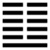

Địa Lôi Phục (復 fù)
Vật không bao giờ tới cùng tận; quẻ Bác, hào dương ở trên cùng thì lại quay trở xuống ở dưới cùng (cùng thượng phản hạ); cho nên sau quẻ Bác tới quẻ Phục. Phục là trở lại (phát sinh ở dưới). Như vậy là đạo tiểu nhân thịnh cực thì phải tiêu, đạo quân tử suy cực thì lại thịnh lần.
Thoán từ:
復: 亨, 出入无疾, 朋來无咎．
反復其道, 七日來復, 利有攸往
Phục: Hanh, Xuất nhập vô tật, bằng lai vô cữu.
Phản phục kì đạo, thất nhật lai phục, lợi hữu du vãng.
Dịch: Trở lại: Hanh thông. Ra vào không gặp tai nạn, bạn bè sẽ lần lượt tới, không lầm lỗi nữa. Vận trời phản phục (tráo đi trở lại), cứ bảy ngày thì trở lại, hành động việc gì cũng có lợi.
Giảng: Khí dương bây giờ trở lại, cho nên hanh thông. Người quân tử (dương) ra vào tự do, không bị tai nạn; rồi sẽ có các hào dương khác kéo nhau tới, cũng như bạn bè tới, không còn lầm lỗi nữa (ý muốn nói; sau quẻ này sẽ tới quẻ Lâm, có hai hào dương ở dưới, rồi tới quẻ Thái, có ba hào dương ở dưới, tới quẻ Đại tráng (4 hào dương) quẻ Quải, (5 hào dương) quẻ Càn (cả 6 hào đều dương), thế là sáu quẻ dương cứ tăng lần. đó là vận phản phục của trời đất, cứ bảy ngày thì trở lại. Chữ nhật (ngày) ở đây thay cho chữ hào; bảy ngày mới trở lại vì sau quẻ Càn, tới quẻ Cấu, một hào âm sinh ở dưới 5 hào dương, ngược lại với quẻ Phục (một hào dương ở dưới 5 hào âm), lúc đó mới hết một vòng (1).
Thoán truyện giảng thêm: Sở dĩ ra vào không bị tai nạn, bạn bè kéo tới, không còn lầm lỗi, vì tượng của quẻ: nội quái Chấn là động, ngoại quái Khôn là thuận; hoạt động mà thuận theo đạo trời thì tốt. Cái đạo của trời đó là tĩnh lâu rôi thì động, ác nhiều rồi thì thiện, có vậy vạn vật mới sinh sôi nẩy nở. Xem quẻ Phục này thấy một hào dương bắt đầu trở lại, tức là thấy cái lòng yêu, nuôi dưỡng vạn vật của trời đất (kiến thiên địa chí tâm).
Đại tượng truyện bảo các vua đời xưa tới ngày đông chí, ngày mà dương bắt đầu sinh (tượng của quẻ Phục: sấm nấp ở dưới đất) thì đóng các cửa ải, không cho khách đi đường và con buôn qua lại mà vua cũng không đi xem xét các địa phương, là có ý muốn yên lặng để nuôi cái khí dương mới sinh.
Ý nghĩa các hào :
1.
初九: 不遠復, 无祇悔, 元吉．
Sơ cửu: Bất viễn phục, vô kì hối, nguyên cát.
Dịch: Hào 1, dương. Tuy lầm lỗi nhưng thời gian chẳng xa, trở lại tốt lành ngay, thì không đến nỗi ăn năn lớn; rất tốt (chữ Kì ở đây có nghĩa là lớn).
Giảng: Hào 1, dương cương, ở đầu quẻ Phục, có nghĩa là người đầu tiên trở lại đạo, biết tu thân, nên rất tốt.
Theo Hệ từ hạ truyện chương V, thì Khổng tử cho rằng Nhan Hồi có đức của hào 1 này, vì Nhan có lỗi lầm gì thì biết ngay mà biết rồi thì sửa liền không mắc lần thứ nhì nữa.
2.
六二: 休復, 吉．
Lục nhị: Hưu phục, cát.
Dịch: Hào 2, âm: Trở lại đẹp đẽ (hữu), tốt.
Giảng: Hào này âm nhu đắc trung, chính, vốn tốt rồi, mà lại ở gần hào 1 là người quân tử, tức là người biết khắc kỉ, trở lại đạo nhân nghĩa; cho nên tuy là âm mà tốt lành.
3.
六三: 頻復, 厲, 无咎．
Lục tam: Tần phục, lệ, vô cửu.
Dịch: hào 3, âm (Mắc lỗi nhưng) sửa lại nhiều lần, tuy đáng nguy, mà kết quả không có lỗi.
Giảng: Hào này bất trung, bất chính, lại ở thời cuối cùng của nội quái Chấn (có nghĩa là động), ví như người không bền chí, theo điều thiện không được lâu, sửa lỗi rồi lại mắc lỗi trở lại, như thế là đáng nguy (lệ), nhưng lại biết phục thiện sửa đi sửa lại nhiều lần, nên rốt cuộc không có lỗi.
4.
六四: 中行, 獨復．
Lục tứ: Trung hành, độc phục.
Dịch: Hào 4, âm: ở giữa các tiểu nhân (các hào âm: 2,3 và 5,6 ) mà một mình trở lại theo quân tử (hào 1), tức theo đạo.
Giảng: hào này âm nhu, đắc chính ở giữa các hào âm, nhưng chỉ một mình nó ứng với hào 1 là dương, quân tử, cho nên Hào từ khen là một mình nó biết theo người thiện.
5.
六五: 敦復, 无悔．
Lục ngũ: Đôn phục, vô hối.
Dịch: Hào 5, âm: Có đức dày trở lại điều thiện, không có gì hối hận.
Giảng: Hào này nhu thuận, đắc trung lại ở vị tôn quí, như một người có đức dày phục thiện (trở lại điều thiện), biết tự sửa mình, cho nên không hối hận.
6.
上六: 迷復, 凶．有災眚．
用行師, 終有大敗, 以其國君凶, 至于十年, 不克征．
Thượng lục: Mê phục, hung, hữu tai sảnh,
Dụng hành sư, chung hữu đại bại, dĩ kì quốc quân hung, chí vu thập niên, bất khắc chính.
Dịch: Hào trên cùng, âm: Mê muội, không trở lại, sẽ bị tai vạ từ ngoài đưa đến (tai) và tự mình gây nên (sảnh); đã vậy lại cậy võ lực mà dùng quân đàn áp người, rốt cuộc sẽ đại bại, làm cho quốc quân cũng bị khốn nạn (hung), tới mười năm (tới chung cục) cũng không khá được.
Giảng: hào này ở trên cùng, như kẻ tiểu nhân hôn mê đến cùng cực, không biết trở lại, cho nên bị đủ thứ tai vạ. Nó có thế lực nhất trong các hào âm (đám tiểu nhân ) vì ở trên cùng, muốn dùng võ lực đàn áp người, rốt cuộc sẽ đại bại, gây vạ lây cho nước nó, không bao giờ khá được. Chữ thập (số 10) là số cuối cùng (số 1 là số đầu) cho nên thập niên ở đây có nghĩa là tới cùng, chớ không nhất định là 10 năm.
Tiểu tượng truyện bảo hào trên cùng này sở dĩ hung là vì làm trái đạo vua (phản quân đạo), tức đạo của hào 1. Hào 1 này là hào dương duy nhất trong quẻ, làm chủ cả quẻ cho nên gọi là vua.
*
Quẻ này xét về sự sửa lỗi để trở về đường chính. Tốt nhất là hạng người tự nhận thấy lỗi rồi sửa liền, không mắc phải lần nữa, rồi tới hạng ở gần người tốt, mà bắt chước vui vẻ làm điều nhân, nghĩa; sau tới hạng có đức dày trở lại điều thiện, hạng ở giữa kẻ xấu mà một mình theo đạo; hạng không bền chí, giữ điều thiện được lâu, nhưng biết phục thiện thì cũng không lỗi.
Xấu nhất là hạng mê muội không biết trở lại đường chính. Ý nghĩa không có gì đặc biệt.